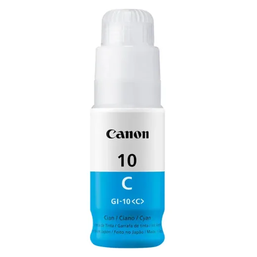

Inicio › Otros de tecnología y hogar

Precio en cada tienda
| Tienda | Precio | Antes | Disponibilidad | |
|---|---|---|---|---|
| Acosa | L 475 | — | Disponible | Ver en tienda › |
Precios referenciales tomados de cada tienda el 14 de noviembre de 2026. El precio válido es el que muestra la tienda al comprar.
Otros otros de tecnología y hogar Canon
 Tinta Canon Gi-10 Yellow 70mlL 475En Acosa
Tinta Canon Gi-10 Yellow 70mlL 475En Acosa
Tinta Canon Gi-10 Cyan 70mlL 475En Acosa Bote de Tinta Original Canon GI-10BK NegroL 460En Sycom
Bote de Tinta Original Canon GI-10BK NegroL 460En Sycom Bote de Tinta Original Canon GI-25BK NegroL 460En Sycom
Bote de Tinta Original Canon GI-25BK NegroL 460En Sycom Tinta Canon Gi-11 NegroL 455En Acosa
Tinta Canon Gi-11 NegroL 455En Acosa Bote de Tinta Original Canon GI-11 BK Negro 135ML G2160/G3160 Compatible con GI-20 G3270 135MLL 450En Sycom
Bote de Tinta Original Canon GI-11 BK Negro 135ML G2160/G3160 Compatible con GI-20 G3270 135MLL 450En Sycom Bote de Tinta Original Canon GI-25C CyanL 437En Sycom
Bote de Tinta Original Canon GI-25C CyanL 437En Sycom Bote de Tinta Original Canon GI-25M MagentaL 437En Sycom
Bote de Tinta Original Canon GI-25M MagentaL 437En Sycom